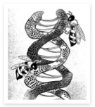
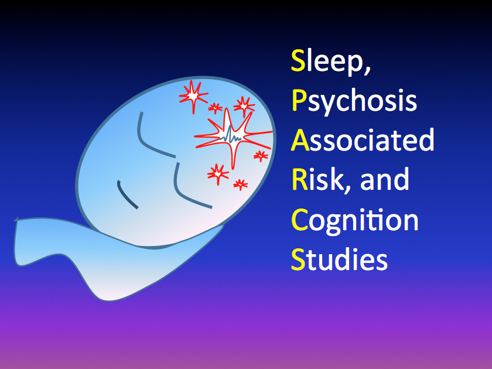

B-SNIP is a large-scale study, funded in 2007 by the National Institute of Mental Health. Schizophrenia and bipolar disorder both "run in families" although how they are inherited and which genes and environmental factors are the most relevant are not well understood. Neither is it clear how these factors affect brain structure and function, personality or cognitive abilities.
Continue reading →
"CLUES" stand for: Cognition for Learning and for Understand Everyday Social Situations.
CLUES is designed to help improve attention, thinking, memory, and social skills in young people ages 16-30, who are being treated at the CEDAR clinic…
Continue reading →
The PARDIP (Psychosis and Affective Research Domains and Intermediate Phenotypes) study is a multi-site research collaboration that aims to observe and test the biomarkers for psychosis and affect dimensions across schizophrenia/bipolar, and look further into genetics for these biomarkers.
Contact: Brandon Hager
Continue reading →
Contact: Nicolas R. Bolo
Continue reading →

SPARCS (Sleep, Psychosis Associated Risk, and Cognition Studies)
Contact: Laura Von Hardenberg
Continue reading →